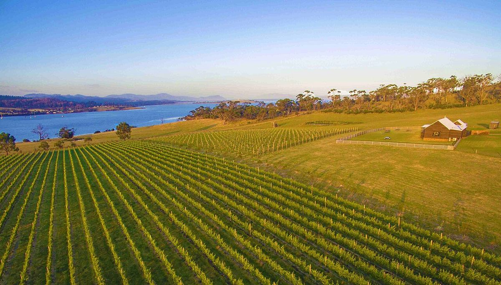

Tasmania
Tasmania, the island south of the Australian mainland, is the country’s coolest wine region. It has made its name with traditional-method sparkling wines, Pinot Noir and Chardonnay.

History
Vines were planted in Tasmania as early as the first half of the nineteenth century, in the colony’s early days, but commercial winegrowing soon disappeared, displaced by other crops and by competition from the warmer mainland regions. The modern revival began in the 1950s and 1960s thanks to European immigrants, such as the Frenchman Jean Miguet in the north of the island and the Italian Claudio Alcorso, who founded Moorilla near Hobart. In the 1970s and 1980s new estates appeared in the Tamar Valley and at Pipers River, and several large mainland companies began buying Tasmanian fruit for their sparkling wines.
In recent decades the vineyard area has grown rapidly. The warming climate in the mainland regions has increased interest in cool areas, and the island attracts investment from Australian and foreign producers. Even so, its output remains small compared with that of the rest of the country.
Climate and soils
Tasmania lies between latitudes 41 and 43 degrees south, exposed to winds from the Southern Ocean. Its climate is cool and maritime, with mild summers, a slow, long ripening period and bright light. The wine areas are mainly in the north, in the Tamar Valley and at Pipers River; on the east coast, which is drier and sunnier; and in the south, around Hobart, in the Coal River, Derwent and Huon valleys. The whole island forms a single geographical indication, although producers often mention these areas. Soils are very varied: basalts and red volcanic soils, dolerites, sandstones, alluvial gravels and clays.
Styles
Traditional-method sparkling wines, made from Chardonnay and Pinot Noir and aged for long periods on their lees, are among the most highly regarded in Australia. Pinot Noir is the most widely planted variety and gives fresh, finely tannic reds with red fruit that vary greatly from one area to another. Still Chardonnay stands out for its acidity and tension. Riesling, Pinot Gris and Sauvignon Blanc are also made in a lively, aromatic style, and in the warmest, most sheltered sites some Syrah and Cabernet Sauvignon are grown. Many mainland wineries buy grapes on the island, and numerous small vineyards sell their crop to larger producers.